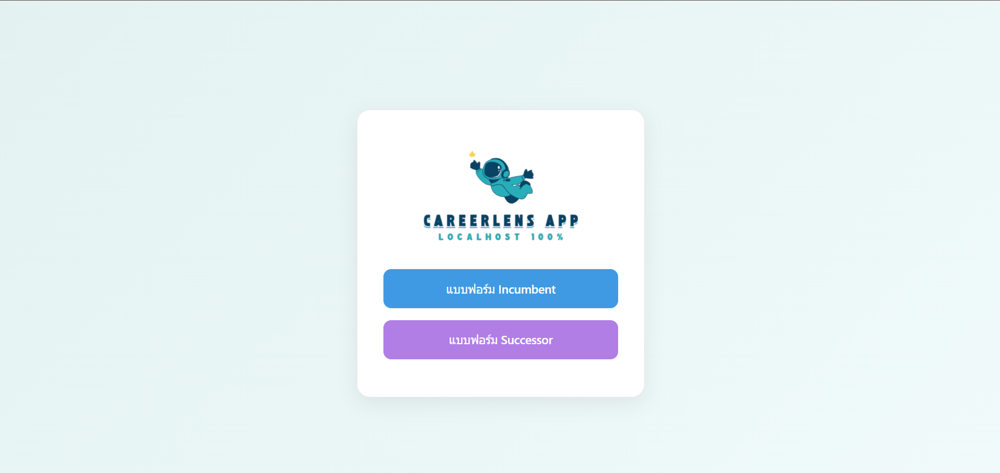
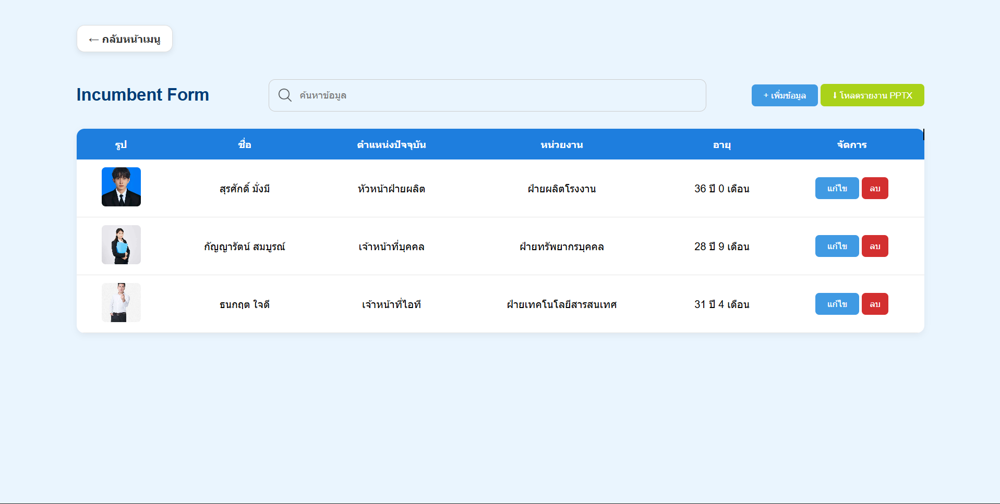
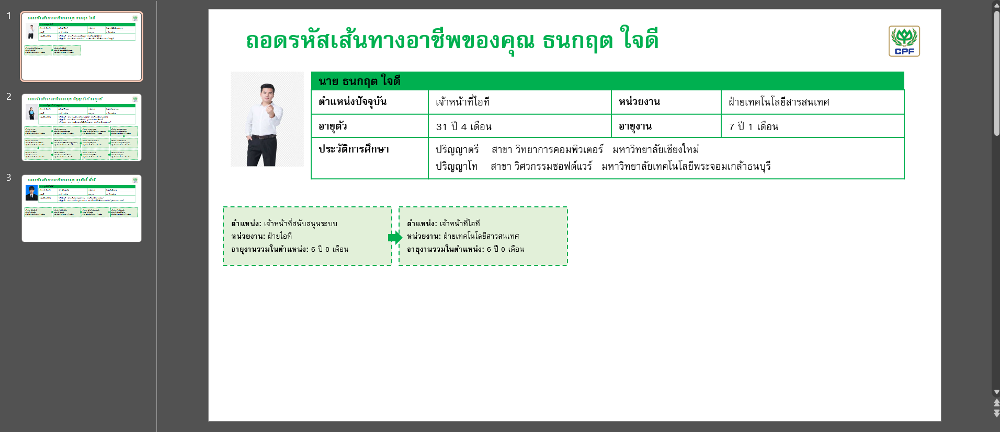

ทีม HR ต้องแปลงข้อมูลโปรไฟล์ผู้ใช้ให้เป็นสไลด์รายงานอยู่บ่อยครั้ง ซึ่งเดิมทำด้วยมือทุกครั้งและใช้เวลานาน อีกทั้งข้อมูลที่ใช้เป็นข้อมูลโปรไฟล์พนักงานซึ่งเป็นข้อมูลละเอียดอ่อน จึงไม่ควรเปิดเป็นเว็บสาธารณะ
สร้างเครื่องมือเว็บที่รับข้อมูลผู้ใช้ที่กรอกเข้ามา แล้วแปลงให้กลายเป็นสไลด์ PowerPoint รูปแบบมาตรฐานโดยอัตโนมัติ ตัดขั้นตอนการจัดรูปแบบสไลด์ด้วยมือออกไปเกือบทั้งหมด โดยออกแบบให้เป็นเว็บแอปที่รันบนเครื่อง (local) แทนการขึ้น host สาธารณะ เพื่อความปลอดภัยของข้อมูล
พัฒนาเป็นเว็บทูลด้วย Node.js ที่รับข้อมูลจากฟอร์ม ประมวลผล และสร้างไฟล์สไลด์ตามเทมเพลตที่กำหนดไว้ให้อัตโนมัติ ตัวแอปไม่ได้ขึ้น host ไว้ที่ไหน แต่ใช้งานได้ทันทีด้วยการโหลดโฟลเดอร์โปรเจกต์แล้วรันผ่าน localhost บนเครื่อง เวลาส่งต่องานให้ทีมอื่นทำต่อก็ zip ทั้งโฟลเดอร์ส่งไปรันต่อได้เลย
ลดเวลาที่ทีมใช้เตรียมสไลด์รายงานโปรไฟล์ด้วยมือลงกว่า 90% ทำให้ทีม HR โฟกัสกับงานส่วนอื่นได้มากขึ้น พร้อมทั้งเก็บข้อมูลพนักงานให้ปลอดภัยเพราะไม่มีการเปิดเข้าถึงผ่านอินเทอร์เน็ต